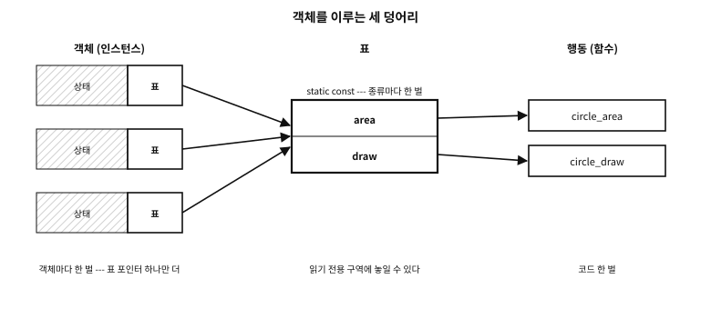

70 객체 지향을 흉내 내기 — 원론과 C 의 맨손
먼저 알아야 할 것
돌아보기
68장에서 구조체의 첫 멤버에 함수 포인터 표를 가리키는 포인터를 두면 다형성을 얻는다고 했고, GTK 가 그 방식으로 거대한 객체 체계를 지었다고 했다. 그렇다면 C 로도 객체 지향 프로그래밍을 할 수 있는 것인가?
답. 흉내 낼 수 있다. 객체 지향 언어가 문법과 컴파일러로 해 주는 일 — 캡슐화, 다형성, 상속, 생성과 소멸 — 을 C 에서는 규약과 손으로 한다. 흉내는 쓸모가 있고, 리눅스 커널과 GTK 와 수많은 라이브러리가 그 쓸모를 증명한다. 그러나 흉내에는 분명한 한계가 있다. 컴파일러가 지켜 주지 않는 약속은 결국 어디선가 깨진다. 이 부는 흉내를 잘 내는 법과, 그 한계를 정직하게 보는 법을 함께 다룬다. 이 장은 그 첫걸음이다.
이 장의 필요성과 맥락
이 장이 끝나면
이 장에서 답할 질문
- 불투명 타입은 늘 힙에 할당해야 하는가?
70.1 객체 지향이란 무엇인가 — 원론#
먼저 낱말을 가른다. 이 책은 36장에서 C 의 객체를 「값을 담는 기억의 한 구역」이라 했다. int 하나도 C 의 객체다. 객체 지향 프로그래밍(object-oriented programming, OOP)의 객체는 다른 낱말이다 — 상태와 그 상태를 다루는 행동을 한 단위로 묶은 것을 말한다. 이 부에서 「객체」는 뒤의 뜻이다.
객체 지향을 설명할 때 흔히 넷을 꼽는다.
| 낱말 | 뜻 | 무엇을 위한 것인가 |
|---|---|---|
| 캡슐화(encapsulation) | 객체의 상태는 그 객체의 행동을 거쳐서만 바뀐다 | 불변식을 한 곳에서 지킨다 |
| 다형성(polymorphism) | 같은 요청에 객체의 종류마다 다른 행동이 답한다 | 부르는 쪽이 종류를 몰라도 된다 |
| 상속(inheritance) | 한 종류가 다른 종류의 상태와 행동을 물려받는다 | 공통 부분을 한 번만 쓴다 |
| 추상화(abstraction) | 바깥에는 무엇을 하는지만, 어떻게 하는지는 감춘다 | 바꿀 수 있는 자리를 만든다 |
표 70.1 — 객체 지향을 설명하는 네 낱말
이 넷은 처음부터 한 묶음이 아니었다.
객체 지향의 첫 언어로 꼽히는 Simula 67 은 노르웨이 컴퓨팅 센터의 Ole-Johan Dahl 과 Kristen Nygaard 가 모의실험(simulation)을 위해 만들었다. 배와 항구와 화물처럼 모의할 대상마다 「클래스」를 두고, 비슷한 대상은 클래스를 물려받게 했다. 클래스와 상속이 이 계보에서 나왔다.
다른 계보는 Alan Kay 와 Xerox PARC 의 Smalltalk 다. Kay 는 「객체 지향」이라는 말을 만든 사람으로 꼽힌다. 그가 그린 객체는 생물의 세포, 또는 네트워크의 컴퓨터처럼 메시지로만 서로 통하는 단위였다. 상속은 그의 그림에서 중심이 아니었다 — 이 이야기는 이 부의 끝(75장)에서 다시 한다.
오늘 「객체 지향」이라는 말은 주로 C++·Java·C# 의 모양, 곧 클래스·상속·가상 함수를 가리킨다. 이 부도 그 모양을 C 로 흉내 내는 법을 다루지만, 그것이 객체 지향의 유일한 모양은 아니라는 것을 기억해 둔다.
70.2 C 에는 없다 — 흉내다#
C23 에는 클래스도, 메서드도, 상속도, 접근 제어도, 생성자도, 소멸자도 없다. 있는 것은 구조체와 함수와 함수 포인터와 헤더 파일이다. 그것들로 객체 지향 언어의 부품을 하나씩 흉내 낸다.
| 언어가 해 주는 것 | C 의 흉내 | 누가 그 약속을 지키는가 |
|---|---|---|
| 캡슐화, 접근 제어 | 불투명 타입 — 헤더에 선언만 두고 정의는 .c 에(61장) | 컴파일러가 일부 지킨다(크기와 멤버를 모르게 한다) |
메서드와 this | 객체 포인터를 첫 인자로 받는 함수 | 사람 |
| 가상 함수, 다형성 | 함수 포인터 표(68장) | 사람 — 표를 잘못 채워도 컴파일러는 모른다 |
| 상속 | 기반 구조체를 첫 멤버로, 또는 container_of(48장) | 사람 — 하향 캐스트(기반을 가리키는 포인터를 파생을 가리키는 포인터로 바꾸기)가 맞는지 아무도 검사하지 않는다 |
| 생성자 | 팩토리 함수 …_new, 초기화 함수 …_init | 사람 — 부르지 않으면 초기화되지 않은 쓰레기 값이 든 객체 |
| 소멸자, RAII(범위를 벗어나면 저절로 정리) | …_free·…_fini 를 직접 부른다 | 사람 — 잊으면 누수 |
| 이름 공간 | 접두어(64장) | 사람 |
| 오버로딩 | _Generic(67장), 또는 다른 이름 | 컴파일러(_Generic 의 갈래 선택) |
표 70.2 — 객체 지향 언어가 해 주는 것과 C 에서 손으로 하는 것
오른쪽 칸을 보라. 대부분이 「사람」이다.
70.2.1 「잘하면 된다」를 경계한다#
흉내를 변호하는 흔한 말이 있다 — 「C 로도 다 할 수 있다. 프로그래머가 잘하면 된다.」 반은 맞다. C 로도 다 할 수 있다. 그러나 「잘하면 된다」는 설계가 아니다. 그것은 「이 약속이 깨지면 프로그래머의 탓」이라고 미리 적어 두는 것일 뿐이다.
언어가 해 주는 일을 손으로 한다는 것은, 그 일이 매번 옳아야 한다는 뜻이다. 표를 채울 때마다, 형 변환을 할 때마다, 객체를 만들고 지울 때마다. 천 번에 한 번 틀리면 천 개의 객체가 있는 프로그램에서는 늘 틀려 있다. 그리고 이 책이 57장에서 본 사고들은 모두 「잘하는」 사람들이 쓴 코드에서 났다.
그래서 이 부의 태도는 이렇다. 규약은 사람이 아니라 구조가 지키게 만든다. 불투명 타입은 바깥 코드가 멤버를 건드리는 것을 컴파일러가 막게 한다. 검사하는 형 변환 매크로는 틀린 하향 캐스트를 실행 때라도 잡는다. 그리고 도구가 잡을 수 있는 것은 도구에 맡긴다.
examples/oop/bad_call/shapes.c
/* 손으로 만든 「메서드 표」를 아무렇게나 채웠다: circle_area 는 원을 받는데,
표의 칸은 도형을 받는 함수를 기대한다. 캐스트가 컴파일러를 조용하게 만들었고,
그것으로 부르는 것은 정의되지 않은 동작이다(C23 6.3.2.3p8). */
#include <stdio.h>
struct shape;
struct shape_ops { double (*area)(const struct shape *); };
struct shape { const struct shape_ops *ops; };
struct circle { struct shape base; double r; };
static double circle_area(const struct circle *c) { return 3.0 * c->r * c->r; }
static const struct shape_ops circle_ops = {
/* 캐스트가 어긋남을 감춘다 */
.area = (double (*)(const struct shape *))circle_area,
};
int main(void)
{
struct circle c = { .base.ops = &circle_ops, .r = 2.0 };
struct shape *s = &c.base;
/* 이 기계에서는 「된다」 --- 그래도 틀렸다 */
printf("area = %g\n", s->ops->area(s));
return 0;
}
실행 결과
plain build : area = 12
(gcc has no -fsanitize=function; using clang for the second build)
checked build : stopped
call to function circle_area through pointer to incorrect function type 'double (*)(const struct shape *)'
표의 칸에 타입이 다른 함수를 형 변환으로 밀어 넣었다. 이 기계에서는 「맞는」 넓이가 나온다 — 그래서 더 위험하다. 호환되지 않는 타입의 함수를 포인터로 부르는 것은 정의되지 않은 동작, 곧 UB(undefined behaviour)다(C23 6.3.2.3p8). Clang 의 -fsanitize=function 은 간접 호출마다 함수의 타입을 확인해 이 자리에서 멈춘다. GCC 에는 이 검사가 없다.
플랫폼 노트. -fsanitize=function
흔한 오해. “C 로 짠 객체 체계는 C++ 와 같은 일을 한다. 단지 손이 더 갈 뿐이다”
dynamic_cast), 생성자를 건너뛴 객체가 없는지를 검사한다. C 의 흉내에서는 그 검사들이 사라지거나, 실행 때의 검사로 바뀌거나, 시험 도구의 몫이 된다. 「손이 더 간다」가 아니라 「틀렸을 때 알려 주는 것이 적다」가 정확한 차이다.70.3 세 덩어리를 가른다 — 상태, 행동, 표#
C 로 객체를 지을 때 가장 먼저 세울 원칙은 셋을 서로 가르는 것이다.
| 덩어리 | C 의 모양 | 몇 벌인가 |
|---|---|---|
| 상태 — 멤버 변수 | 인스턴스 구조체 | 객체마다 한 벌 |
| 행동 — 메서드 | 함수(static 또는 접두어를 단 바깥 함수) | 코드 한 벌 |
| 표 — 가상 함수 표 | 함수 포인터만 든 static const 구조체 | 종류마다 한 벌 |
표 70.3 — 객체를 이루는 세 덩어리
68장의 vtable.c 가 이 모양이었다. 객체는 표를 가리키는 포인터 하나만 갖는다.

그림 70.1 — 상태는 객체마다, 표는 종류마다 한 벌, 행동은 코드 한 벌.
표를 객체 밖에 종류마다 한 벌씩 따로 두는 까닭은 셋이다.
- 크기. 함수 포인터를 객체마다 복사해 두면 메서드 다섯 개짜리 객체가 40바이트 커진다. 객체 백만 개면 40 MB 다. 표를 가르면 객체마다 8바이트다.
- 한 곳에서 바꾼다. 종류의 행동을 바꾸려면 표 하나를 고친다. 객체마다 함수 포인터를 들고 있으면, 어느 객체가 옛 함수를 들고 있는지 알 수 없다.
- 보안. 쓸 수 있는 기억에 놓인 함수 포인터는 공격의 표적이다 — 버퍼 하나가 넘쳐 그 포인터를 덮으면, 프로그램이 다음에 실행할 곳을 공격자가 정하게 된다(57장). 표를
static const로 두면 컴파일러와 링커가 그것을 읽기 전용 구역에 놓을 수 있다. 표준이 그렇게 놓으라고 정하지는 않지만, 흔한 구현은 그렇게 한다. 객체 안에 남는 것은 표를 가리키는 포인터 하나뿐이다. 표를 실행 때 지어야 한다면 다 지은 뒤 읽기 전용으로 봉인하는 길이 있다(72장).
리눅스 커널 개발자 Neil Brown 은 커널의 객체 지향 패턴을 정리하면서, 함수 포인터만 든 「순수한 표」를 기본으로 두고 표에는 함수 포인터 말고 다른 것을 거의 넣지 않는다고 적었다. 예외는 모듈 소유자나 이름처럼 그 구현을 등록하는 데 필요한 필드뿐이다.1
70.3.1 표의 빈칸#
표의 칸을 비워 두는(NULL) 것은 흔한 관례다 — 「이 종류는 이 행동을 따로 정하지 않는다」. 그러면 부르는 쪽은 매번 if (ops->flush) ops->flush(obj); 처럼 확인해야 한다. Brown 의 글은 이 관례의 비용을 지적하고, 기본 행동을 명시적으로 채우는 쪽이 더 깔끔한 경우가 많다고 했다. C99 의 지정 초기자(.flush = … 처럼 칸의 이름을 적어 채우는 초기화)로 「기본값 묶음」을 매크로로 두고, 종류마다 다른 칸만 덮어쓰는 방식이다. 빈칸이 없으면 부르는 쪽의 확인도, 확인을 잊은 사고도 없다.
아래 예제가 두 관례를 나란히 놓는다 — 칸을 NULL 로 비워 두는 관례 1 과, 기본값 묶음으로 모든 칸을 먼저 채우는 관례 2 다. 스트림 두 종류가 write · flush · close 세 칸짜리 표를 쓴다 — 쓴 것을 모았다가 flush 때 내보내는 「파일」과, 바로 적으니 flush 할 일이 없는 「메모리」다. close 는 표에 나중에 더한 칸이라고 치자.
examples/oop/defaults.c
/* 표의 빈칸 --- 두 관례를 나란히 놓는다.
관례 1: 할 일이 없는 칸은 NULL 로 비워 두고, 부르는 쪽이 칸마다 확인한다.
관례 2: 기본 행동을 함수로 두고 「기본값 묶음」 매크로로 모든 칸을 먼저 채운 뒤,
종류마다 다른 칸만 덮어쓴다(N. Brown, LWN 2011). 부르는 쪽은 그냥 부른다.
스트림 두 종류: 「파일」은 쓴 것을 모았다가 flush 때 내보내고, 「메모리」는 바로 적으니
flush 할 일이 없다. close 는 표에 *나중에 더한* 칸이라고 치자. */
#include <stdio.h>
struct stream;
struct stream_ops {
void (*write)(struct stream *s, const char *text);
void (*flush)(struct stream *s);
void (*close)(struct stream *s); /* 나중에 더한 칸 */
};
struct stream { const struct stream_ops *ops; const char *name; int pending; };
static void file_write(struct stream *s, const char *text)
{
(void)text;
s->pending++; /* 모아 두기만 한다 */
}
static void file_flush(struct stream *s)
{
printf(" %s: flushed %d pending writes\n", s->name, s->pending);
s->pending = 0;
}
static void memory_write(struct stream *s, const char *text)
{
printf(" %s: stored \"%s\"\n", s->name, text);
}
/* ---- 관례 1: 빈칸 ---- */
static const struct stream_ops file_ops_1 = { .write = file_write, .flush = file_flush };
static const struct stream_ops memory_ops_1 = { .write = memory_write };
/* 두 표 모두 close 를 모른다 --- 칸이 생기기 전에 쓴 표라 NULL 이다 */
static void finish_1(struct stream *s)
{
if (s->ops->flush) /* 부르는 쪽마다 칸마다 이 확인 */
s->ops->flush(s);
if (s->ops->close)
s->ops->close(s);
}
/* ---- 관례 2: 기본값 묶음 ---- */
static void stream_flush_nothing(struct stream *s) { (void)s; }
static void stream_close_default(struct stream *s)
{
printf(" %s: closed (default close)\n", s->name);
}
#define STREAM_OPS_DEFAULTS \
.flush = stream_flush_nothing, .close = stream_close_default
/* 같은 칸을 두 번 초기화하면 뒤의 것이 이긴다(C23 §6.7.11p20). 그러나 컴파일러는 이것을
실수로 두 번 쓴 칸과 구별하지 못해 경고한다(GCC -Wextra 의 -Woverride-init,
Clang 의 -Winitializer-overrides). 표를 선언하는 이 몇 줄에서만 끈다. */
#pragma GCC diagnostic push
#pragma GCC diagnostic ignored "-Woverride-init"
static const struct stream_ops file_ops_2 = {
STREAM_OPS_DEFAULTS,
.write = file_write,
.flush = file_flush, /* 기본값을 덮어쓴다 */
};
static const struct stream_ops memory_ops_2 = {
STREAM_OPS_DEFAULTS,
.write = memory_write, /* flush · close 는 기본 그대로 */
};
#pragma GCC diagnostic pop
static void finish_2(struct stream *s)
{
s->ops->flush(s); /* 빈칸이 없으니 확인도 없다 */
s->ops->close(s);
}
int main(void)
{
puts("convention 1: empty slots, the caller checks each one");
struct stream f1 = { .ops = &file_ops_1, .name = "file" };
struct stream m1 = { .ops = &memory_ops_1, .name = "memory" };
f1.ops->write(&f1, "a");
f1.ops->write(&f1, "b");
m1.ops->write(&m1, "c");
finish_1(&f1);
finish_1(&m1);
printf(" memory flush slot: %s\n", memory_ops_1.flush ? "filled"
: "NULL --- a caller that forgets the check calls a null pointer");
printf(" close slot in both tables: %s\n",
file_ops_1.close || memory_ops_1.close ? "filled" : "NULL --- nobody closes");
puts("convention 2: defaults filled in, the caller just calls");
struct stream f2 = { .ops = &file_ops_2, .name = "file" };
struct stream m2 = { .ops = &memory_ops_2, .name = "memory" };
f2.ops->write(&f2, "a");
f2.ops->write(&f2, "b");
m2.ops->write(&m2, "c");
finish_2(&f2);
finish_2(&m2);
return 0;
}
실행 결과
convention 1: empty slots, the caller checks each one
memory: stored "c"
file: flushed 2 pending writes
memory flush slot: NULL --- a caller that forgets the check calls a null pointer
close slot in both tables: NULL --- nobody closes
convention 2: defaults filled in, the caller just calls
memory: stored "c"
file: flushed 2 pending writes
file: closed (default close)
memory: closed (default close)
관례 1 에서는 할 일이 없는 칸(메모리의 flush)과 아직 아무도 채우지 않은 칸(두 표의 close)이 똑같이 NULL 이어서, finish_1 은 칸마다 확인해야 한다. 이 확인을 하나라도 빠뜨린 호출은 널 포인터를 부른다. 관례 2 에서는 STREAM_OPS_DEFAULTS 가 모든 칸을 먼저 채우고, 표는 다른 칸만 덮어쓴다. 나중에 더한 close 는 이 묶음에 기본을 하나 적는 것으로 끝난다 — 어느 표도 고치지 않았는데 두 표의 그 칸이 모두 채워진다. 그래서 finish_2 에는 확인이 없다.
관례 2 에도 대가가 있다. 같은 칸을 두 번 초기화하는 것은 표준이 허용하고 뒤의 것이 이기지만(C23 §6.7.11p20), 컴파일러는 이것을 실수로 두 번 쓴 칸과 구별하지 못해 경고한다. GCC 14 는 -Wextra 에서(-Woverride-init), Clang 19 는 옵션 없이도(-Winitializer-overrides) 경고했다. 예제는 표를 선언하는 몇 줄에서만 #pragma 로 그 경고를 끈다. 경고를 끄기 싫으면 묶음 대신 표마다 모든 칸을 이름으로 적되, 할 일 없는 칸에 stream_flush_nothing 같은 기본 함수를 적는다. 빈칸이 없다는 이득은 같고, 새 칸을 더할 때마다 모든 표를 고쳐야 하는 수고가 든다.
70.4 불투명 타입 — 캡슐화의 C 판#
61장에서 헤더에 구조체를 선언만 하고 정의는 .c 에 두는 불투명 포인터를 보았다. 객체의 눈으로 다시 보면, 이것이 C 가 줄 수 있는 가장 강한 캡슐화다.
examples/oop/opaque/stack.h
/* stack.h --- 라이브러리를 쓰는 쪽이 보는 것. 구조체는 선언만 하고 정의하지 않는다:
stack.c 밖에서는 아무도 크기와 멤버를 모르므로, 아무도 그것에 기댈 수 없다. */
#ifndef PCB_STACK_H
#define PCB_STACK_H
#include <stddef.h>
typedef struct pcb_stack pcb_stack; /* 불완전 타입: 이름뿐이다 */
pcb_stack *pcb_stack_new(size_t capacity); /* 팩토리: 객체를 얻는 유일한 길 */
void pcb_stack_free(pcb_stack *s); /* 그 짝: 쓰는 쪽이 불러야 한다 */
bool pcb_stack_push(pcb_stack *s, int v); /* 객체는 언제나 첫 인자 */
bool pcb_stack_pop(pcb_stack *s, int *out);
size_t pcb_stack_size(const pcb_stack *s); /* const: 읽기만 한다 */
#endif
실행 결과
push 1: ok
push 2: ok
push 3: ok
push 4: full
size 3
pop 30
pop 20
pop 10
sizeof(pcb_stack) outside stack.c: refused by the compiler (incomplete type)
main.c 는 pcb_stack 의 포인터를 쥐고 함수를 부를 수 있을 뿐이다. 멤버를 읽을 수도, 크기를 물을 수도 없다 — 마지막 줄이 보이듯 sizeof(pcb_stack) 은 컴파일러가 거절한다(불완전 타입, 27장). 그래서 stack.c 는 멤버를 바꿔도, 크기를 바꿔도, 유연 배열 멤버로 할당을 한 번으로 줄여도 바깥 코드를 깨지 않는다.
대가는 하나다 — 바깥이 크기를 모르니 바깥이 할당할 수 없다. 객체는 늘 라이브러리가 만든다(팩토리). 스택에 놓을 수 없고, 배열로 늘어놓을 수 없다. 그래서 작고 많은 객체(점, 색, 작은 벡터)는 불투명 타입으로 만들지 않고 공개 구조체로 둔다. 감추기를 택할지, 자료를 촘촘히 늘어놓는 배치(51장)를 택할지의 선택이다.
문. 불투명 타입은 늘 힙에 할당해야 하는가?
답. 아니다. 라이브러리가 그릇만 바깥에서 받으면 된다. 하나는 할당자를 인자로 받는 것이다(t_new(alloc, …)) — 부르는 쪽이 아레나나 풀(미리 잡아 둔 큰 기억 덩어리)을 건네면 객체는 그 안에 생긴다(71장의 수명 규약). 다른 하나는 크기를 함수로 알려 주는 것이다 — size_t t_size(void) 로 크기를 묻고, 부르는 쪽이 그만큼(그리고 max_align_t 에 맞춘) 자리를 마련해 t_init(mem) 에 넘긴다. 둘 다 멤버는 여전히 감춘다. 다만 둘째 길은 크기가 실행 때 정해지므로 정적 배열이나 구조체 멤버로는 둘 수 없다.
70.5 이름 — 접두어가 곧 이름 공간#
C 의 외부 이름은 모두 한 공간을 함께 쓴다(63–64장). 라이브러리 둘이 같은 이름의 함수를 내놓으면 링크가 실패하거나, 더 나쁘게는 조용히 한쪽이 불린다. C++ 의 namespace 가 해 주는 일을 C 에서는 접두어가 한다. 이것은 취향이 아니라 필요다 — 접두어 없이 내놓은 stack_push 는 언젠가 누군가의 stack_push 와 만난다.
객체 체계에서는 접두어가 구조를 드러내는 데까지 쓰인다.
- 함수는
접두어_타입_동사—pcb_stack_push,gtk_widget_show. - 타입은
접두어_타입또는 카멜 케이스(camel case) 명명법의GtkWidget. - 매크로와 상수는 대문자 접두어
PCB_,GTK_. - 예약된 이름(밑줄 + 대문자로 시작하는 것 등)은 쓰지 않는다(63장).
64장의 접두어 표가 실제 라이브러리들의 규약을 보였다. 여기서 더할 것은 하나다 — 한 라이브러리 안에서는 규칙을 예외 없이 지킨다. 이름만 보고 「이것은 어느 타입의 어느 행동인가」가 읽히면, 접두어는 이름 공간 이상의 일을 한다.
70.6 첫 인자는 객체 — this 를 손으로#
C++ 의 obj.push(1) 은 C 에서 pcb_stack_push(obj, 1) 이다. C++ 가 감춰 주는 this 를 첫 인자로 손으로 넘긴다. 첫 자리에 두는 것은 관례지만 거의 모든 C 라이브러리가 따르는 관례다 — 읽는 사람이 「무엇에 대한 호출인가」를 첫눈에 본다.
- 읽기만 하는 행동은
const객체를 받는다.size_t pcb_stack_size(const pcb_stack *s). C++ 의const메서드에 해당하고, 읽기만 한다는 약속을 컴파일러가 확인한다. - 순서를 바꾸지 않는다. 한 라이브러리 안에서 어떤 함수는 객체가 첫째, 어떤 함수는 마지막이면 틀린 자리에 넘기는 사고가 난다. 표준 라이브러리의
fputs(s, f)와fprintf(f, …)가 그 반례다 — 스트림이 한쪽에서는 마지막, 다른 쪽에서는 처음이다. - 널 객체의 계약을 정한다.
pcb_stack_free(nullptr)는 아무것도 하지 않는다(free처럼) — 이렇게 정하면 정리 코드가 단순해진다.pcb_stack_push(nullptr, 1)은 계약 위반이다 — 검사해서 오류를 돌려줄지, 단언으로 멈출지 정해서 문서에 적는다(37장).
70.7 이 부의 여섯 장#
이 장은 흉내의 맨손 — 표 하나, 감춘 구조체 하나, 접두어, 첫 인자 — 까지 왔다. 남은 다섯 장은 그 맨손으로 무엇을 짓고, 무엇이 비싸고, 남들은 무엇을 지었고, 어디서 멈출지를 차례로 본다.
| 장 | 묻는 것 | 중심 도구 |
|---|---|---|
| 70장 | 객체 지향은 무엇이고, C 에는 무엇이 없는가 | 상태·행동·표의 분리, 불투명 타입, 접두어, 첫 인자 |
| 71장 | 표를 어떻게 짓는가 — 다형성, 상속, 오버로딩, 판, 수명 | static const 표, 기반 표를 품은 파생 표, 크기 필드 |
| 72장 | 표를 컴파일 때 다 알 수 없으면? | 실행 때 짓고 봉인하는 표, 뚱뚱한 포인터, 이름으로 찾는 호출 |
| 73장 | 간접 호출은 정말 얼마인가 | 측정, 간접 호출을 줄이는 법, 보안 장치(retpoline · CFI)의 비용 |
| 74장 | 남들은 C 로 무엇을 지었는가 | Objective-C, Xt, GObject, 커널, SQLite, OpenSSL, 논문 |
| 75장 | 어디서 멈추는가 | 매크로를 어디까지 쓸지, SOLID, 두 가지 한계, 표현 문제, 처음 생각으로 돌아가기 |
표 70.4 — 제11부의 여섯 장
70.8 정리#
| 주제 | 요점 |
|---|---|
| 원론 | 객체는 상태와 행동의 묶음이다. Simula 의 클래스·상속과 Smalltalk 의 메시지, 두 계보 |
| 흉내와 한계 | 흉내의 부품 대부분을 사람이 지킨다. 「잘하면 된다」 대신 구조와 도구가 지키게 |
| 세 덩어리 | 상태는 객체마다, 행동은 코드 한 벌, 표는 종류마다 한 벌(static const) |
| 표의 빈칸 | NULL 칸은 부르는 쪽마다 확인을 요구한다. 기본값 묶음으로 채우면 확인도 사고도 없다 |
| 불투명 타입 | C 가 줄 수 있는 가장 강한 캡슐화. 대가는 「바깥이 할당할 수 없다」 |
| 이름과 첫 인자 | 접두어는 필요다. 객체는 첫 인자, 읽기만 하면 const, 널 객체의 계약을 적는다 |
표 70.5 — 객체 지향을 흉내 내기 — 한 줄씩
맨손 도구는 갖췄다. 다음 장은 그 가운데 가장 많이 쓰는 것 — 함수 포인터 표 — 로 다형성과 상속을 짓고, 그 표가 판이 바뀌고 수명이 끝나는 것까지 견디게 하는 법을 본다.
주
- N. Brown, 「Object-oriented design patterns in the kernel, part 1」, LWN.net, 2011-06-01. ↩